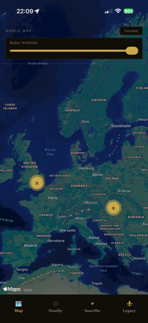
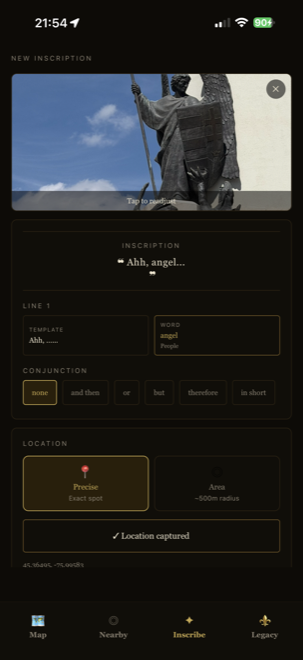
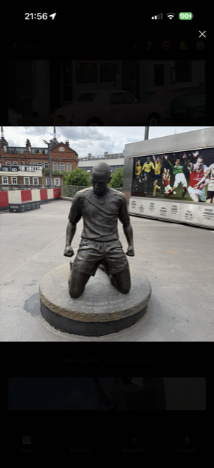
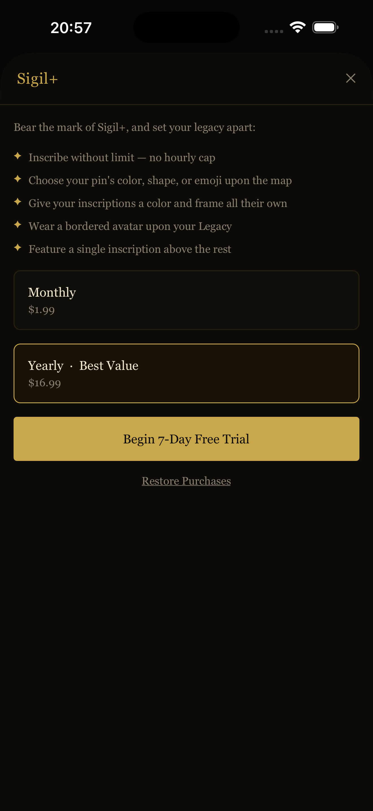

SIGIL
SIGIL
Building a message board that leaves no trace it shouldn't
A solo-built iOS app that turns real-world coordinates into a place to leave something behind — from first idea through App Store submission.
The idea
Most location-based apps use place as a filter — sort what's already global down to what's nearby. I wanted the opposite: content that only gets made by actually being somewhere, even if you can go looking for it from anywhere.
The idea borrows from the message system in FromSoftware's action RPGs — other players leave short, cryptic notes pinned to the game world, and you stumble on them without ever meeting who wrote them. I kept wondering what that would feel like mapped onto an actual street corner instead of a level design. So Sigil is that: you write something, pin it to where you're standing (or blur it out to a wider area if you'd rather not share your exact spot), and it sits there until someone finds it.
Two decisions followed straight from that premise, both of which ended up shaping a lot of the engineering later on. The first was about creation, not discovery: an inscription only gets made by actually being somewhere — you write it standing at the spot, never from a form that lets you drop a pin on a map you've never visited. Finding them is more forgiving — the app defaults to what's near you, the way you'd stumble onto one on foot, but nothing stops you from panning the map out and browsing what's been left anywhere in the world, the way you might flip through a photo album of places you've never been. Second, the privacy story couldn't be an afterthought: if you're publishing something tied to your physical location, "blurred on the map but exact in the database" isn't good enough — the imprecise version has to be the only version that ever gets written.
What it does
Finding what's out there
The map is the front door — inscriptions cluster into numbered badges as you zoom out and split apart as you zoom in, so a spot with fifty messages doesn't drown out a spot with one. A radius control lets you stay hyper-local or pull all the way out to see everything posted worldwide, log-scaled so the same slider works at both ends.

Writing one
There's no free-text caption field — every inscription is built from a curated set of templates and word categories, the same constraint the source material itself uses to keep messages evocative instead of generic. Pick a template, fill the blanks from a searchable word list, optionally attach a photo (stripped of EXIF data and compressed before it ever leaves the device), then choose precise or blurred-area placement.

Reacting to one
Tap an inscription to view its photo full-screen and "appraise" it if it resonates — a lightweight, reversible upvote, not a comment thread.

Showing up without an account
Everything above works with zero signup. The app opens an anonymous session automatically, and claiming it later with an email or Sign In with Apple upgrades that same underlying identity rather than creating a new one — nothing already posted gets orphaned.
Knowing when something's nearby
An opt-in proximity alert uses iOS's native geofencing to notify you when you walk near a new inscription — detection happens entirely on-device, so no location data leaves the phone for this feature specifically.
Sigil+
A small paid tier, deliberately self-referential — it doesn't change what other people can see or do, only how a subscriber's own presence in the app looks and behaves: unlimited posting instead of the free tier's hourly cap, custom pin and card styling, one featured inscription pinned to the top of a profile.

How it's built
The client is intentionally thin. It doesn't decide who can see what, how fast someone can post, or where the boundary of a blurred-area inscription actually sits — all of that lives in Postgres, enforced by row-level security and a handful of functions, so the rules hold even if something talks to the API directly instead of going through the app.
The privacy design mentioned earlier is the clearest example of that instinct. When you post to a wide area instead of an exact point, the blur isn't a map overlay hiding a precise coordinate that's sitting in the database somewhere — the imprecise version is the only one that ever gets written. There's nothing to leak later, because the real value never existed server-side to begin with.
Reads follow the same "push it into Postgres, not the client" logic. The map and the nearby feed both call a single PostGIS function that does the actual distance filtering server-side, rather than pulling everything down and sorting it out locally. That same function ended up being the natural home for two other rules that have nothing to do with geography on the surface — a per-user block list and an hourly posting cap — because "filter what this specific request is even allowed to return" was already the shape of the problem.
Identity follows the same philosophy in a different direction: an account starts anonymous, and claiming it with email or Sign In with Apple upgrades that same underlying identity rather than replacing it, so nothing posted before you signed up ever gets orphaned.
Client — React Native + Expo, TypeScript
Backend — Supabase: Postgres, PostGIS, Auth, Storage, Edge Functions
Payments — RevenueCat, for App Store subscription state and receipt validation
Hard problems solved
A 20-region limit on a planet-sized map
Proximity alerts sounded simple until I read into how iOS actually implements geofencing: the OS caps you at watching roughly twenty regions at once, which doesn't work when inscriptions are scattered across the entire planet. The fix was a "leash" — alongside up to nineteen regions around the nearest inscriptions, one large region gets registered around wherever the list was last refreshed, watching only for you to exit it. Wander far enough to leave that outer boundary and the same mechanism quietly re-registers the next nearest batch on its own, no separate background-tracking system required.
There was a second, less expected layer underneath that: even with the region math right, notifications silently weren't firing on a real device. Permissions were granted, positions were tracked, the regions being registered were correct — the actual bug turned out to be one property Expo's own geofencing module sets internally regardless of anything the app does, which iOS refuses to honor unless the app's Info.plist declares a location background mode. Only found by reading that native module's source directly rather than trusting the higher-level config.
One feature, four bugs
Appraising an inscription looked broken for a while, and it took several rounds to realize it wasn't one bug — it was four independent ones stacked on top of each other, each masking whether the others were fixed. The insert was missing a column a security policy required, so every appraisal was silently rejected. The count on each card was a stored counter nothing ever actually incremented. Un-appraising had no delete permission and no way for the app to know upfront it had already happened. And the one screen showing your own posts ran a completely separate query from everywhere else, so it kept looking broken even after the other three were fixed. The real lesson: a feature that "still doesn't work" after one real fix is worth assuming has more than one bug in it, not re-diagnosing the first one.
A silent opt-out hiding inside a Fragment
Adding marker clustering to the map meant handing its children over to a third-party clustering library. Precise-location pins clustered fine; blurred-area ones never did. The library decides what counts as a marker by walking its direct children and checking each one's type — and wrapping an area sigil's marker and its privacy-radius circle in a single React Fragment, a completely reasonable way to group two related elements, made the whole pair invisible to that check. Nothing errored; the pins were there, they'd just permanently opted out of clustering with no signal why. The fix was mechanical once found — two flat, unwrapped passes instead of one wrapped one.
A permission fix that didn't actually apply itself
The subscription entitlement lives on two columns on a user's own row, locked down from the start with a targeted revoke specifically so no client could grant itself the paid tier. It looked correct and went unquestioned for a while. It wasn't: the platform grants a blanket, table-wide update permission to every signed-in client by default, and database privilege checks are additive — a narrow revoke layered on top of a broader grant doesn't narrow it, it does nothing. Any signed-in client could have set their own subscription flag directly through the API for as long as it existed. Found while wiring up an unrelated feature and re-checking the client's actual write surface, closed by revoking the broad grant outright and re-granting only the specific columns the app is meant to write.
Where it stands
Sigil is in Apple's review pipeline right now — the build is submitted, and once it clears I'll open it up to a wider App Store audience. In the meantime it's already running as a closed TestFlight beta with a small group of friends and family, which turned out to be useful timing rather than just parallel busywork: the moderation system (report and block) needed two real accounts interacting to actually verify, something a solo dev testing alone structurally can't do, so that's one of the specific things this round of testers is walking through.